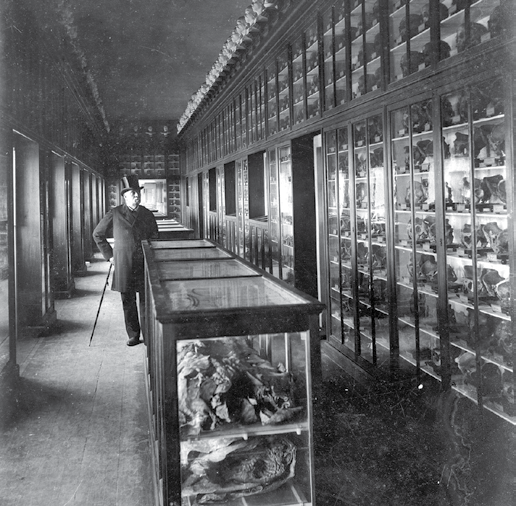
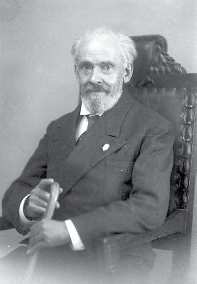
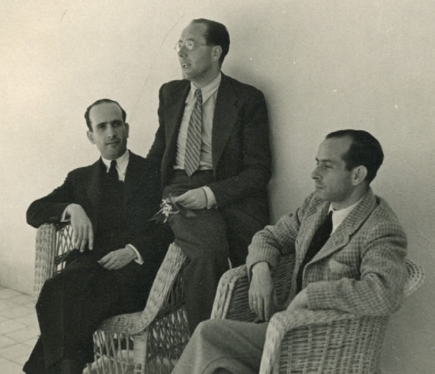
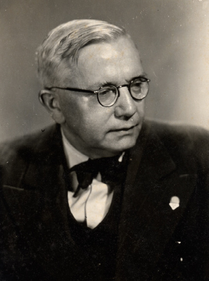
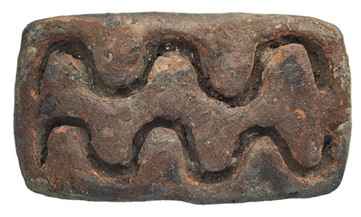
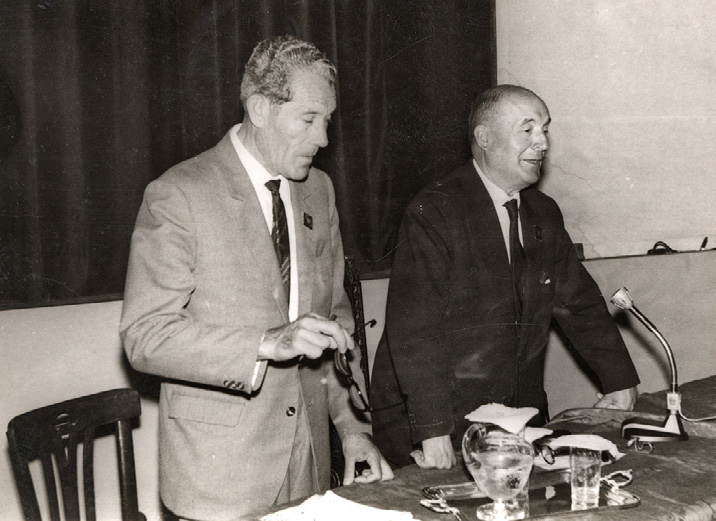
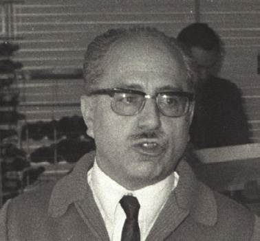
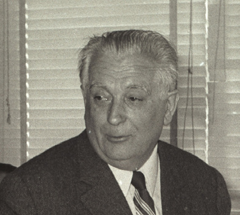
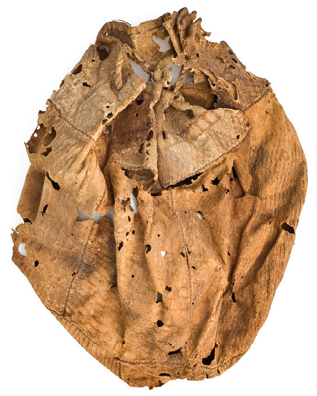

Capítulo 4Chapter 4
4. Apuntes para una historia de la investigación sobre las pintaderas4. Notes towards a history of research on the pintaderas
Si hacemos un recorrido por la producción científica referente al pasado aborigen del archipiélago, apreciaremos que las pintaderas han sido un elemento recurrente en los estudios desarrollados, abordándose desde dos vertientes. Una de ellas ha de enmarcarse en el especial protagonismo que durante un dilatado período de tiempo se confirió a la reconstrucción del poblamiento preeuropeo. La presencia de matrices sirvió, junto a otros elementos del repertorio arqueológico, para establecer los orígenes y la secuencia de ocupación insular o, incluso, para justificar la arribada de grupos cultural y racialmente preeminentes. Así, desde que la arqueología comenzara su andadura en Canarias, en la segunda mitad del siglo XIX, y hasta la década de 1980, las pintaderas fueron entendidas como uno de los “fósiles directores” de determinadas oleadas poblacionales.
Al tiempo, y en ocasiones estrechamente relacionadas con la cuestión de los orígenes, su funcionalidad y significación fueron también objeto de atención y debate, mostrándose como interrogantes constantes a lo largo de la investigación en torno a las sociedades aborígenes. Estas cuestiones han conformado así la otra vertiente de aproximación a las pintaderas. El uso de estas producciones cerámicas se ha configurado, además, como el principal aspecto tratado en aquellos estudios que en las últimas décadas las han abordado de una manera más o menos desarrollada.
Sería precisamente la funcionalidad uno de los aspectos más discutidos a finales del siglo XIX. Mientras unos autores defendieron el empleo de las pintaderas como elementos para la decoración corporal, otros las vincularon con el ámbito religioso o bien las interpretaron como amuletos y elementos de adorno a un tiempo.
Así, entre los primeros investigadores que abordan el estudio de estos sellos se encuentra el cónsul francés Sabino Berthelot, quien en su obra de 1879 Antiquités canariennes, define las matrices como “sellos o moldes para estampar”, especulando con la posibilidad de que estuvieran “destinados para impresiones en color, para tatuajes”1 (1980: 148). Por las mismas fechas, en 1880, Carlos Pizarroso y Belmonte se refiere a las matrices que formaban parte del “antiguo Gabinete de Casilda” como “sellos de los Guanartemes de Gáldar”, a manera de “signos representativos de la autoridad que se ejerce” (pp. 17-18), simbolizando sus armas o blasones.
Otra línea de opinión representa el médico Gregorio Chil y Naranjo, para quien la explicación de estas piezas pasa necesariamente por inscribirlas en el marco de las creencias de los antiguos canarios. Basaba su punto de vista en las formas y motivos triangulares de algunas de ellas, que él entendía como la figuración simbólica del agua, la tierra y el cielo (2004), y en “el punto donde se han encontrado, que ha sido en las faldas de las montañas” (1880: 258), sirviendo la perforación que presentan para su suspensión al cuello. Sin embargo, años después el autor opta por modificar dicha explicación indicando, en un discurso ofrecido con ocasión del X aniversario de la fundación de El Museo Canario, que “eran signos para escribir el lenguaje, como lo hacen actualmente los japoneses que, bajo esa forma gráfica, escriben lo mismo que nosotros” (1900: 242)2.

Fig. 4.1. Gregorio Chil y Naranjo en la sala de antropología física de El Museo Canario, cuando éste se encontraba instalado en el Ayuntamiento de Las Palmas de Gran Canaria (AMC-FFLO-000234, ca. 1900)
Pero sin duda, es al antropólogo francés René Verneau a quien debemos el primer estudio detallado sobre estos materiales, plasmando los resultados en un artículo monográfico que vería la luz en 1883, dentro de los Anales de la Sociedad Española de Historia Natural. Verneau acude a los ambientes arqueológicos donde se recuperaron algunos sellos y a las características físicas de estas piezas para rebatir la interpretación religiosa de Chil o la idea de amuletos propuesta por Millares, asignando a las matrices la función del pintado corporal. A diferencia de los anteriores autores, Verneau construye sus planteamientos sobre bases científicas, recurriendo a diversos criterios que incluyen, entre otros, el recurso a la práctica de lo que podríamos llamar una “arqueología experimental”. Así, las referencias recogidas en algunas fuentes etnohistóricas sobre la pintura corporal de los indígenas canarios3, la presencia de restos de pintura roja en un sello, o el empleo tradicional de la voz “pintadera” por parte de los habitantes de Tirajana para designar a estos sellos, son algunos argumentos de los que se vale el antropólogo para reforzar su hipótesis. En esta misma línea establece comparaciones con materiales arqueológicos y etnográficos de similar morfología procedentes de distintos puntos geográficos4, afianzando con ello su interpretación funcional. Finalmente, y como ya adelantábamos, no duda en impregnar de ocre algunos vaciados de yeso de pintaderas5 y aplicarlos en el cuerpo para demostrar la viabilidad de tal destino.

Fig. 4.2. René Verneau (AMC-FFTM-prov852, ca. 1930)
Por las mismas fechas Agustín Millares Torres (1881; 1977) propone un doble empleo como amuletos y elementos de adorno a modo de colgantes, oponiéndose a las tesis de Verneau al no encontrar restos de “tinta” en las pintaderas que examina.
Lo cierto es que la interpretación conferida a las pintaderas por Verneau (decoración corporal) y los criterios empleados para ello, harían fortuna y serían adoptados por numerosos autores posteriores, como también lo fue el término “pintadera”, una designación que, en muchas ocasiones, conllevó implícito ese particular destino: el de la aplicación de pintura6.
Por su parte, Diego Ripoche y Torrens (1901) acude a las similitudes formales que las pintaderas grancanarias muestran con las procedentes de diversas zonas americanas, africanas e italianas –de carácter arqueológico y etnográfico–, así como a las referencias de las fuentes etnohistóricas americanas y canarias, para defender su empleo como elementos usados en el pintado tegumentario. Especial incidencia hace en la analogía que las pintaderas de Gran Canaria guardan con las de madera elaboradas por poblaciones indígenas vivas de Sudamérica, destinadas a la pintura del cuerpo, estableciendo a partir de estas comparaciones igual finalidad para los objetos canarios. En una estrategia de análisis recurrente en la historiografía canaria, las pintaderas son interpretadas por el autor en virtud de meros paralelismos formales7.
También en el marco temporal de principios del siglo XX hay que ubicar las consideraciones de Juan Bethencourt Alfonso, para quien las matrices, destinadas al “tatuaje de los canarios” (1991: 110), serían testimonio de una oleada de poblamiento “íbero-turdetano” que él defiende para Canarias, postulando tanto la reproducción del símbolo de la esvástica en algunas de ellas como la representación en otras del triángulo púbico, elementos ambos que apuntarían, siempre según el autor, a la identidad entre las poblaciones aborígenes y los íberos peninsulares.
En torno a la funcionalidad propuesta para estas piezas debió también de existir una cierta influencia de la tradición oral, según se deduce de la referencia ya comentada de Verneau a que los habitantes de Tirajana las denominaban “pintaderas”, o de la alusión que Álvarez Rixo hace, en un manuscrito, a las matrices reunidas por Sebastián Casilda. El autor indica que se trataba de “cierta especie de señales o caracteres que aseguraba Casilda ser el sello o tésera con que el Guanarteme de Gran Canaria autoriza sus órdenes o decretos, según la tradición conservada y llegada hasta persona que donó a Casilda dicha reliquia” (en M.A. Fariña, 1994: 528).
Ya en la década de 1920 cabe destacar los trabajos de Earnest A. Hooton (2005), antropólogo norteamericano que, partiendo de un enfoque histórico cultural, postula que la presencia de sellos en la isla de Gran Canaria es consecuencia de un contacto con el entorno del Mediterráneo, donde también se documentan estas producciones. Las manifestaciones arqueológicas grancanarias son explicadas por este autor a partir de “diversas invasiones de grupos poblaciones”, una de las cuales daría lugar a un “estrato mediterráneo”, caracterizado por introducir elementos como la cerámica con decoración pintada, el cultivo del trigo o las propias pintaderas, manifestaciones todas ellas que E.A. Hooton asocia a un grupo humano racial y, por extensión, culturalmente “superior”, mediterráneo o de origen europeo8. La arribada de este contingente la ubica “cuando ya el bronce se utilizaba en el Mediterráneo Oriental” (2005: 377).
Desde una perspectiva funcional, define las pintaderas como “troqueles para cerámica que los nativos utilizaban posiblemente para imprimir dibujos en el cuerpo de la pieza que se estaba trabajando” (2005: 99), un destino que, sin duda, muestra el desconocimiento que sobre la cerámica prehispánica tenía este investigador norteamericano.
También en la década de 1920 hay que situar las referencias de Stéphane Gsell a las pintaderas canarias, quien, en un estudio general sobre la historia antigua del norte de África, recoge que los antiguos habitantes de Gran Canaria se decoraban la piel con pinturas impresas mediante sellos de hueso o tierra cocida (1929, pp. 11-12, en C. Martín, 1984).
En 1938 llega a Gran Canaria el arqueólogo y antropólogo José Pérez de Barradas y Álvarez de Eulate, quien aprovecha la estancia para proponer al museo un estudio de los materiales arqueológicos que custodiaba, ofreciendo “una clasificación técnica y moderna de las salas de cerámica, etc., de esta Sociedad” (AMC/AMC, LAJDEMC n.º 5, sesión de 21-X-1938; M.ª C. Cruz, 2008). Producto de este trabajo es una publicación en torno a la prehistoria de Gran Canaria, en la que analiza de manera individual las distintas producciones materiales aborígenes. En este marco, las pintaderas son presentadas como objetos destinados a “estampar sobre la piel dibujos en color” (1939: 21). Dicha funcionalidad es conferida por Pérez de Barradas a partir de las referencias de algunas fuentes etnohistóricas a la decoración corporal de los aborígenes canarios, así como de la similitud formal de las piezas canarias con pintaderas de México y Colombia. Sin embargo, el autor aclara que la principal vinculación de estos objetos ha de establecerse, “especialmente las de estilo arcaico, con piezas semejantes, de las grutas neolíticas de Liguria (Arene Candide) y fondos de cabaña de Reggio (Italia), así como con la pintura corporal de la época predinástica y del círculo cultural del Danubio” (1939: 21). De este modo inserta las pintaderas en su teoría sobre los orígenes, cronologías y modelo de poblamiento, señalando, en el marco de los postulados del historicismo cultural9, una “migración camita de gentes del Sahara (...) los cuales traerían una serie de elementos culturales, que tienen sus paralelos en el Mediterráneo como (...) los ídolos, las primeras pintaderas (...)”, que tendría lugar en torno al 3000 a.C. o un poco después de esta fecha (1939: 33-34).

Fig. 4.3. José Pérez de Barradas (a la derecha) junto al comisario provincial de excavaciones arqueológicas, Sebastián Jiménez Sánchez, (a la izquierda) y al comisario general de excavaciones arqueológicas, Julio Martínez Santa-Olalla, (en el centro). Año 1941 (AMC/SJS caja 4, sobre 2)
En 1940 ve la luz un estudio del berberólogo Georges Marcy, que representará un hito en la investigación de las matrices, por el especial eco que tendrá en trabajos posteriores, hasta el punto de que las valoraciones vertidas por el autor seguirán teniendo vigencia hasta nuestros días en algunas publicaciones. Su propuesta y la de René Verneau conformarán las dos teorías sobre la funcionalidad de las pintaderas en torno a las que girará el resto de estudios que abordan estas manifestaciones arqueológicas.
Concretamente, Marcy recurre a la etnoarqueología para ofrecer una explicación a los sellos, centrándose en estudios de las poblaciones bereberes del Aurés. Rechaza la teoría de Verneau que entendía estas piezas como instrumentos para el pintado corporal, refutando cada uno de los argumentos en los que el autor francés sustentó su planteamiento. Así, por ejemplo, critica las comparaciones llevadas a cabo entre las pintaderas canarias y las centroamericanas, por no existir ninguna relación entre las poblaciones que las generaron.
La defensa de una colonización del archipiélago protagonizada por grupos norteafricanos constituye el eje fundamental a partir del que el investigador francés sustenta su propuesta para explicar las matrices grancanarias. De esta manera, da a conocer cómo entre los bereberes del macizo del Aurés se recurre al empleo de sellos de madera muy similares a los canarios para precintar o marcar el cierre de los silos ubicados en graneros colectivos, un sistema que, según el autor, se remontaría siglos atrás en otras zonas de la geografía bereber norteafricana (concretamente al siglo XVII en el Gran Atlas marroquí), tal y como apuntarían algunas fuentes bibliográficas por él consultadas.
Por tanto, los dibujos de estos sellos tendrían, en virtud de su destino, un carácter individualizador, de identificación o diferenciación. Las semejanzas formales y el origen bereber de las poblaciones prehispánicas del archipiélago llevan al autor a conferir igual funcionalidad para las matrices de los antiguos canarios: marca o sello personal10. A la par, niega cualquier relación de estas piezas con la pintura corporal, ya que entre los bereberes norteafricanos no se aplica con ningún objeto similar a las pintaderas, sino directamente con las manos.
En la misma línea de las comparaciones etnoarqueológicas hay que situar el estudio de Théodore Monod en torno a pintaderas del oeste africano (1944), recogiendo los testimonios de otros autores sobre sellos destinados, en ciertas áreas geográficas, a la estampación corporal con fines terapéuticos y, en otras, a la decoración de tejidos.
En 1942 el lingüista y etnólogo austriaco Dominik J. Wölfel publica un Ensayo provisional sobre sellos e inscripciones canarios, donde define las pintaderas como “estampillas que señalan una posesión personal o las personas mismas”, adoptando en este sentido los postulados de Marcy en lo que respecta al concepto de marca individual. Establece una relación entre los sellos canarios y los procedentes del entorno cultural mediterráneo y próximo oriental (Egipto, Creta o Mesopotamia), una vinculación que defiende también para otros materiales del registro arqueológico canario. Tales planteamientos se enmarcan dentro de su teoría de poblamiento del archipiélago, llegando a afirmar que las pintaderas “sólo aparecen en la zona de influencia de las más antiguas culturas superiores” (1942: 106). En este sentido las matrices pasan a erigirse, de nuevo, en fósil director dentro de unas teorías de poblamiento abordadas desde el historicismo cultural, y por tanto en el marco de unas oleadas migratorias que son las que protagonizan el cambio cultural.

Fig. 4.4. Dominik J. Wölfel (AMC-CFH-NI1058, ca. 1950)
El empleo de los sellos en la aplicación de dibujos corporales es la interpretación seguida por la mayoría de los que ocuparon cargos oficiales relacionados con la arqueología durante el período de la Comisaría General de Excavaciones Arqueológicas: Sebastián Jiménez Sánchez, comisario de excavaciones arqueológicas en la provincia de Las Palmas, Luis Diego Cuscoy en la de Santa Cruz de Tenerife o Pedro Hernández Benítez, comisario local de Telde, son un ejemplo de ello.
Una de las excepciones vendría dada por quien ejerciera el cargo de comisario de la provincia de Santa Cruz de Tenerife entre 1942 y 1951, Juan Álvarez Delgado. Este filólogo abordaría las pintaderas desde criterios lingüísticos, al relacionarlas con el término que algunas fuentes escritas recogen para la voz “tarha” y adoptar la traducción que para ella proponía D. Wölfel: marca o escrito. Según Álvarez Delgado, algunas alusiones de las fuentes etnohistóricas a la existencia de “divisas de las tarhas o rodelas”11 o de señales aplicadas a las pieles de las momias para su identificación12, constituirían indicadores del empleo de “marcas, señales o blasones personales tal vez idénticas a las pintaderas” (1942: 124). Refuta, de otra parte, la relación que en su momento estableciera Verneau entre la voz tradicional “pintadera”, empleada por la población de Santa Lucía, y la función de “pintar” de las matrices, al entender que esa designación de las piezas aborígenes no sería sino el producto de la asimilación de la voz “pintadera” empleada por los panaderos castellanos en el marcado de los panes. En suma, Álvarez Delgado entiende estos artefactos como un elemento de identificación, si bien deja margen en su trabajo para que pudieran tener, siempre desde esta significación, diversas aplicaciones.
Frente a ello, S. Jiménez Sánchez se limita a significar las pintaderas como elementos “para el tatuaje” (por ej.: 1945b, 1958). Por su parte, para L. Diego Cuscoy, comisario por la provincia de Santa Cruz de Tenerife, las pintaderas, como otros elementos de la cultura material, permiten vincular a la población aborigen con el norte de África13 (2008). En el marco de las teorías de poblamiento, y basándose en el registro arqueológico, este autor (1961) postula una “primera oleada cultural” que colonizaría el conjunto del archipiélago, a la que se sumarían otras aportaciones posteriores que afectarían sólo a una o unas pocas islas. Así, las pintaderas, junto con la cerámica característica de Gran Canaria, las casas de piedra y los túmulos, serían testimonio de la arribada a esta isla de un grupo humano posterior a la primera oleada mencionada.
Al igual que Sebastián Jiménez, y siguiendo de cerca los posptulados que en su día sostuviera René Verneau, Pedro Hernández Benítez (1944; 1958) opta por defender la propuesta de que las pintaderas serían empleadas para la decoración corporal, rebatiendo la teoría de Marcy de sellos de propiedad destinados a marcar los espacios de los graneros. El rechazo frontal a los planteamientos de Marcy lo sustenta en diversas cuestiones, como la referencia de algunas fuentes etnohistóricas a la práctica de una decoración corporal entre los canarios, la casi ausencia de hallazgos de sellos en contextos de almacenamiento o el descubrimiento –en 1936 en una cueva de Acusa– de una pintadera con, según el autor, restos de almagre. Además, y en aras de ratificar sus argumentos, el presbítero teldense estampa el dibujo de algunas pintaderas de diferentes dimensiones14 sobre pellas de barro, tratando de mostrar, a partir de esta experimentación, la inviabilidad de tal uso.
Tampoco Elías Serra Ráfols parece dudar del empleo de los sellos en el “adorno personal” mediante su estampación en el cuerpo, tras ser impregnados en colores elaborados a partir de tierras o elementos vegetales (1990 [1950-1960]: 46-47), si bien en artículos anteriores apunta a una posible diversidad de usos: “para sellar, para pintarse y, acaso, otros fines” (1945b: 241).
En 1946 Leopoldo de la Rosa Olivera da a conocer una serie de documentos fechados a principios del siglo XVI, al poco tiempo de finalizar la conquista del archipiélago, en los cuales intervienen antiguos canarios. Lo destacado de estos manuscritos reside en que la rúbrica de los aborígenes se encuentra total o parcialmente realizada mediante elementos geométricos. El autor plantea si acaso tales signos pudieran ser el testimonio del empleo, por la población prehispánica grancanaria, de ciertos elementos de identificación personal o familiar, como tal vez fuera el caso de las pintaderas. En este sentido debe señalarse que, décadas después, J. Onrubia y G. Quintana (2002) vuelven a analizar las marcas plasmadas en los mencionados manuscritos, observando un predominio de los contornos con forma de círculo y de triángulos opuestos por un vértice. En un intento de dar explicación a estos signos, hacen una comparación con las geometrías plasmadas en las pintaderas, cuestionando la posibilidad de coincidencias entre unos y otros por no estar representada abundantemente entre los sellos la morfología bitriangular que sí recogen los documentos escritos15.

Fig. 4.5. Pintadera (n.º de inventario 3146) hallada en 1936 en un granero del conjunto arqueológico de Acusa (Artenara). La pieza presenta áreas con restos barrosos rojizos y anaranjados en el campo, cuya composición mineralógica no ha sido por el momento analizada
2 cm.
El americanista José Alcina Franch publica, en 1956, un extenso artículo sobre las pintaderas canarias, a las que trata de dar explicación partiendo del estudio de aquéllas documentadas hasta ese momento en Asia, Europa, África y América. Recurre para ello al método comparativo, adoptando el hiperdifusionismo como paradigma que guía su discurso. De esta forma, tomando en consideración la distribución geocronológica de estas piezas y las temáticas de sus dibujos, plantea que desde el Oriente Próximo, donde sitúa el origen de las matrices durante el Neolítico, se difundirían hacia Europa y el norte de África, llegando a Canarias entre el 2000 y el 1500 a.C. (1956). A partir de aquí, las islas tendrían el papel de plataforma de lanzamiento hacia América de todo lo que culturalmente había recibido del Mediterráneo y del noroeste de África (1981). Las pintaderas canarias pasaban así a constituir el origen de las mesoamericanas, si bien estas propuestas no tuvieron continuidad alguna.
En ese marco, el estudio de los sellos mexicanos y la similitudes formales que encuentra con los canarios, conducen al autor a defender para estos últimos la misma finalidad que tuvieron los americanos, esto es, “imprimir con materias colorantes (...) en su cuerpo, dibujos de mil géneros distintos” (1956: 84), continuando así las teorías que en su momento propugnara R. Verneau. En paralelo, rechaza las propuestas de G. Marcy en virtud de la repetición de los motivos de muchas pintaderas, lo que entraría en contradicción con la idea de que serían sellos personales o de propiedad.
Así, puede observarse que los autores que trataron las pintaderas hasta esas fechas de mediados del siglo XX fijaron su interés, en unos casos, en la funcionalidad de esas piezas, y, en otros, en su valor como indicadores del origen –geográfico y cronológico– de una determinada oleada de poblamiento insular, si bien en más de un caso se ocuparon de ambas cuestiones. Lo cierto es que en los momentos centrales del siglo XX y en las décadas posteriores numerosos investigadores continuarán en esta misma línea, como es el caso de Luis Pericot o Miguel Tarradell, entre otros.
Luis Pericot García, prehistoriador y arqueólogo, catedrático de las universidades de Santiago, Valencia y finalmente Barcelona, aborda el estudio de las pintaderas en el marco de su análisis del poblamiento prehispánico de Canarias, entendiéndolas como un elemento para establecer relaciones entre el archipiélago y otras áreas geográficas, tratando con ello de dilucidar algunas cuestiones sobre el origen de las sociedades preeuropeas (1955). De esta forma vincula las pintaderas, junto con la trepanación y la momificación, al ámbito oriental, definiendo una “gran oleada cultural” llegada por el norte de África en el III milenio a.C. En cuanto al posible uso que se podría haber dado a estas piezas, se limita a enunciar las principales interpretaciones ofrecidas hasta esa fecha, decantándose por el marcado personalizado de silos.
Por su parte Miquel Tarradell i Mateu, catedrático de Arqueología, Epigrafía y Numismática de la Universidad de Valencia y con posterioridad de Barcelona, construye una secuencia de ocupación humana del archipiélago durante el período preeuropeo (1969), haciendo un balance de los elementos más característicos de la prehistoria canaria y asignándoles posibles orígenes. En el esquema que el arqueólogo catalán desarrolla, las pintaderas son presentadas, junto a los ídolos, las necrópolis en cuevas, las cuevas pintadas o la cerámica pintada, como elementos aportados en torno al 2000 a.C. por un contingente poblacional –el segundo según el autor– que arriba a Gran Canaria procedente del Mediterráneo europeo e inserto en la cultura eneolítica16. Tarradell rechaza explícitamente la posibilidad de una “ruta africana” para tales manifestaciones.

Fig. 4.6. Luis Diego Cuscoy y Luis Pericot, inaugurando el “V Congreso Panafricano de Prehistoria y de Estudio del Cuaternario” (1963). Fotografía de José Naranjo (AMC/SJS, caja 4, sobre 3)
También el arqueólogo inglés Osbert G.S. Crawford, en un artículo que dedica a la colonización preeuropea del archipiélago canario (1955), recurre a las pintaderas como elementos que, junto a otras evidencias arqueológicas, apuntan a algún tipo de conexión con las culturas del Mediterráneo a partir del III milenio a.C., fecha que fija en virtud de la cronología establecida para los sellos procedentes de Liguria.
Frente a ello, el médico Juan Bosch Millares, director de El Museo Canario entre 1967 y 1972, ve en las pintaderas el testimonio de una “oleada cultural recibida durante el tercer milenio” procedente del norte de África. En el marco de la clasificación racial que hace de la población aborigen, atribuye la factura de los sellos a un tipo semita, el cual, según este autor, sería el responsable de las casas de piedra, el pintado corporal con pintaderas, las “inscripciones”... asignándole por todo ello un “tipo de civilización más avanzada”. Relaciona la funcionalidad de las matrices con la pintura corporal, negando su empleo como sellos de propiedad ante la repetición de los motivos representados en ellas. Propone, además, que los dibujos que imprimirían pudieron tener el carácter de “amuletos o talismanes”.
En esta segunda mitad del siglo XX, Lionel Balout, analizando el problema del primitivo poblamiento canario, señala que la presencia de pintaderas podría ser indicativa de una relación con el ámbito bereber. Opta por la pluralidad de usos de este material: impresiones en piel, recipientes, tejidos o productos alimenticios como “la galleta o el pan” (1971: 101)17.


Fig. 4.7. Miquel Tarradell (imagen izquierda) y Lionel Balout (imagen derecha) durante su estancia en Gran Canaria con ocasión del “Simposio Internacional conmemorativo del centenario del descubrimiento del primer hombre de Cro-Magnon”, celebrado entre los días 16 y 22 de febrero de 1969 (AMC-FFJN-s55n33 y s55n35)
También el catedrático de Arqueología y Prehistoria de la Universidad de La Laguna, Manuel Pellicer Catalán, haría una breve alusión a las pintaderas, negando la posibilidad, defendida con anterioridad por diversos autores, de una relación directa con las pintaderas orientales, las neolíticas europeas (ligurias y danubianas) o las americanas (1968-1969), rompiendo así con las teorías difusionistas desde las que algunos investigadores habían tratado de dar explicación a estas piezas. Destaca la similitud de los “motivos decorativos” con los empleados “por los bereberes desde la protohistoria hasta la actualidad”. Esta vinculación cronocultural establecida por el autor, que también extiende a otras manifestaciones arqueológicas, hay que enmarcarla en su teoría de poblamiento. Así, partiendo de evidencias como las propias matrices, sitúa los focos de procedencia de la población aborigen en el noroeste africano y el Sáhara, rejuveneciendo considerablemente –respecto a lo defendido hasta el momento– las primeras arribadas, al situarlas a mediados del primer milenio a.C. (1971-1972). En este sentido, Pellicer se desmarca de los postulados mantenidos hasta estas fechas de vínculos directos con el Mediterráneo que envejecían considerablemente las datas de la ocupación insular.
En cuanto a la aplicación de las matrices, si bien en un principio opta por la multifuncionalidad (impresión en barro, en cuero o en cuerpo) (1968-1969), posteriormente prefiere mantenerse en la indefinición.
Tenemos que esperar a la década de 1980 para encontrar estudios más exhaustivos de la mano de Celso Martín de Guzmán y Jorge Onrubia Pintado. A Martín de Guzmán debemos el primer análisis historiográfico de las pintaderas, así como un inventario de las descubiertas hasta esas fechas en Gran Canaria. Pero el principal interés que los sellos despiertan en el investigador galdense reside en el papel que les asigna como definidoras o indicadoras de un determinado “horizonte cultural”. De esta forma su aproximación a las pintaderas sigue en cierta medida los postulados anteriores, en el sentido de conferirles el valor de fósil director de una oleada de poblamiento. Concretamente distingue una serie de horizontes culturales, definido cada uno de ellos por unos registros materiales específicos en asociación arqueológica18, desde los cuales construye una periodización de la prehistoria de Gran Canaria. De esta forma, cuevas artificiales decoradas, cerámica pintada, ídolos y sellos, definirían en Gran Canaria el horizonte o cultura de la Cueva Pintada. Las características de estos elementos le llevan a vincularlos con el Mediterráneo, y especialmente con el ámbito oriental, aunque el autor no llega a determinar las fechas de entrada del grupo humano portador de estos elementos (1988).
Su interpretación funcional se enmarcaría en la teoría de elementos de identificación, dentro de la cual llega a plantear diferentes usos19. Así, habla del empleo de los sellos en el marcado de productos perecederos tales como tortas comestibles de harina de cebada, manteca, etc.20, comprensible especialmente en el marco de sistemas de almacenamiento en depósitos de carácter comunitario (C. Martín, 1984). Al tiempo, C. Martín no duda en volver a ciertos planteamientos ya apuntados a fines del XIX, como los de G. Chil o A. Millares, al considerar que la presencia de orificios en algunos de los apéndices permitiría conferirles un valor mágico u ornamental, o incluso de emblema. En este último sentido el autor llega a proponer que, dadas las analogías con las pinturas de la Cueva Pintada, las matrices podrían interpretarse “como insignias emblemáticas de los nobles, o escudos de armas”21.
En cualquier caso, los sellos, en palabras del propio prehistoriador, serían “capaces de indicar relaciones de pertenencia o de vinculación”, una línea argumental que resulta de insertar las pintaderas en la concepción que ofrece el investigador de una sociedad compleja de carácter protoestatal, con diferenciación de clanes y demarcaciones étnicas (1988). Sin embargo, C. Martín no duda en incluir también la posibilidad de que las matrices tuviesen un uso similar al documentado etnográficamente por Mondière en 1879 (en Th. Monod, 1944 o R. Verneau, 1883) en la región de Assinia (Costa de Marfil), donde se recurría a sellos de madera para estampar en aquellas zonas del cuerpo aquejadas de algún dolor, variando el dibujo de las piezas en función de la enfermedad y la parte afectada22. Desde esta perspectiva las pintaderas poseerían una función mágico-curativa.
En definitiva, puede apreciarse que las pintaderas han sido un elemento que, junto a otras manifestaciones materiales, han servido para construir diferentes discursos en torno al origen y forma de sucederse el poblamiento insular. Se puede afirmar en este sentido que han sido consideradas durante muchas décadas como auténticos fósiles directores de la arqueología grancanaria. Nada hay, pues, de inocente en la búsqueda de los paralelismos de las pintaderas con piezas de similar morfología de otros ámbitos geográficos, ya que, en muchos casos, esas analogías han sido el soporte de diferentes modelos de ocupación. Muchas de estas aproximaciones a las matrices podrían definirse así como producto de las corrientes de pensamiento en boga en cada momento y al servicio, en algunas ocasiones, de unas particulares ideologías.
Lo cierto es que a partir de la década de 1980 asistimos a un cierto cambio en las formas de aproximación a estas piezas y de integración de las mismas en el discurso arqueológico, centrándose ahora el interés en cuestiones esencialmente funcionales. Este giro se debió, en buena medida, a la aceptación por parte de la mayoría de la comunidad científica de una ocupación del archipiélago protagonizada por poblaciones bereberes procedentes del norte de África, en fechas que no parece puedan remontarse mucho más allá de mediados del primer milenio a.C. Pasan ahora a entenderse los sellos como una manifestación del grupo humano que habitó la isla de Gran Canaria, incorporándose, con desigual protagonismo, en diferentes ámbitos de la reconstrucción histórica de estas poblaciones. A tal efecto, encontramos frecuentes alusiones a las matrices en los apartados dedicados a la estructura socioeconómica de los antiguos canarios, al relacionarlas con marcas de propiedad para el precintado de los silos que conformaban los graneros colectivos (por ej. M.ª C. del Arco, M.ª Jiménez y J.F. Navarro, 1992; M.ª C. del Arco y J.F. Navarro, 1987; A. Tejera y R. González, 1987). Atrás han quedado ya las comparaciones formales con manifestaciones análogas de distantes ámbitos cronoculturales y, más aún, la reconstrucción de unas vías de difusión para estas piezas23.
En este nuevo contexto, la interpretación más generalizada en las últimas décadas es la que otorga a estas piezas un carácter multifuncional, de manera que a su empleo como marcas individualizadoras para sellar el cierre de silos se suman otros destinos ya contemplados por la historiografía pasada, como la impresión de sus dibujos en objetos de diversa naturaleza o la pintura corporal (por ej. M.ª C. del Arco, M.ª Jiménez y J.F. Navarro, 1992; A. Mederos y G. Escribano, 2002; J.F. Navarro, 2005).
En este marco, merece una atención preferente el trabajo de Jorge Onrubia, que en las últimas décadas del XX dedica parte de su investigación a las pintaderas. El autor lleva a cabo un estudio en torno a los graneros fortificados del Magreb y de los tampones empleados en tales contextos, a fin de aclarar las vinculaciones establecidas en su momento por Georges Marcy. En lo que respecta a esta relación entre las pintaderas grancanarias y las norteafricanas, concluye que dicho vínculo es, cuando menos, frágil. En primer lugar porque, siempre según J. Onrubia, el empleo de sellos de madera, recogido por el berberólogo francés, para el precintado de las cámaras de los graneros colectivos del norte de África es minoritario24 (1986), como también lo es el uso del propio precinto de arcilla donde se estampa el sello u otro elemento de función semejante. En segundo lugar, considera problemática la analogía morfo-tipológica que Marcy establece entre los sellos canarios y los empleados en el Aurés. Y, de otra parte, cuestiona la propia existencia de graneros colectivos en Gran Canaria con la misma significación que los construidos en el norte de África por poblaciones bereberes, en el marco de unas estructuras sociopolíticas y económicas muy particulares.
En definitiva, J. Onrubia basa su denuncia de la inconsistencia de las teorías de Marcy, en la crítica al recurso simple de las comparaciones etnoarqueológicas establecidas entre las poblaciones preeuropeas del archipiélago canario y los bereberes del norte de África. La visión de las islas como “provincia cultural bereber” ha conducido, según el investigador, al establecimiento de meras analogías fenoménicas desde las que se trata de dar explicación a algunas de las manifestaciones aborígenes.
Onrubia opta finalmente por una valoración multifuncional de estas piezas, como parece ser usual entre los autores de fines del siglo XX. Y en este marco, y pese a las críticas vertidas hacia la interpretación etnoarqueológica de Marcy, no renuncia a la posibilidad de unos sellos entendidos como “marcas clánicas de propiedad” relacionadas con el precintado de los silos de los graneros colectivos.
También por las mismas fechas M.ª de la Cruz Jiménez Gómez (1980; M.ª C. Jiménez y M.ª C. del Arco, 1984) aborda estas producciones cerámicas, concluyendo que debieron de estar relacionadas con la aplicación de una decoración pintada, variando los elementos sobre los que se imprimirían: el propio cuerpo, manufacturas de cuero, etc. Se basa para ello en las alusiones de algunas fuentes etnohistóricas a la ornamentación corporal de los canarios y en ciertas evidencias arqueológicas: de una parte, los motivos geométricos pintados en el extremo superior de una bolsa de cuero, cuyas características apuntan a que fueron realizadas mediante impresión; y de otra, la reproducción con almagre de elementos geométricos en un ídolo hallado en Tara (Telde), que la autora interpreta como trasunto de una decoración, ya corporal, ya de la vestimenta, ejecutada mediante el empleo de pintaderas.
Por su parte, Rafael González Antón y Antonio Tejera Gaspar (1990), partiendo de un poblamiento de origen norteafricano (bereber) a partir del siglo V a.C., vinculan las pintaderas con este entorno geocronológico y cultural, poniendo en entredicho las teorías que durante décadas, desde comparaciones tipológicas, vieron en estas piezas los testimonios de unos orígenes mediterráneos u orientales que retrotraían considerablemente las fechas de colonización insular. En este marco, la interpretación de los autores sigue la propuesta de Marcy, viendo en las matrices instrumentos para señalar la pertenencia a un grupo familiar de los cubículos abiertos en los graneros colectivos (A. Tejera y R. González, 1987: 105).
Finalmente, insertando las pintaderas en el marco de las características socioeconómicas de los antiguos canarios, José J. Jiménez González las define como sellos de propiedad, indicadores de una sociedad jerárquica y estratificada. Desde esta perspectiva, la presencia de los sellos en determinados asentamientos respondería, junto a otros elementos como los ídolos, “a la estratificación y la jerarquía de los jefes matrilineales” (1999: 289), llegando a calificar como “elitistas” algunos de los asentamientos en cuyo registro arqueológico figuran ídolos y pintaderas. En consecuencia, la presencia o ausencia de sellos en los núcleos de población es interpretada por este autor como reflejo de la capacidad productiva y de reserva del grupo humano que ocupa el enclave, de su capacidad de carga demográfica o del número de linajes y segmentos de linaje.

Fig. 4.8. Bolsa de cuero (n.º de inventario 2612) decorada con motivos geométricos realizados con almagre
Notas al capítulo 4
- René Verneau acusaría a Sabino Berthelot de hacer suya esta interpretación que originariamente él mismo le habría comunicado durante una de sus estancias en el archipiélago.
- Las interpretaciones construidas por Gregorio Chil no parecen tener continuidad en el tiempo, si bien, ya en el siglo XXI, Juan A. Belmonte y Michael Hoskin (2002), en el marco de la arqueoastronomía, vuelven a definir las matrices como “amuletos” o “símbolos de la divinidad”, al ver en muchos de los motivos reproducidos en ellas, la representación de elementos astrales como el sol o la luna, o incluso, signos de la escritura líbico-bereber de posible significación astral.
- Diversas fuentes etnohistóricas aluden a una decoración tegumentaria entre los aborígenes. Así, por ejemplo, según Alvise da Ca’ da Mosto “Tanto hombres como mujeres suelen pintarse el cuerpo con jugos de hierba de color verde, rojo (...) lo que consideran una hermosa divisa” (1998: 73). André Thevet señala la aplicación de pinturas de diversos colores “cuando iban al combate” (E. Aznar, 1988: 857), y en la misma línea López de Gómara, en el capítulo que dedica a la descripción de las “costumbres de los canarios”, apunta que “Pintábanse de muchas [sic] colores para la guerra y para bailar las fiestas” (1932: 257). Por su parte, los autores de Le Canarien emplean el término “grabar” para referirse al adorno corporal: “y la mayoría lleva blasones de distintas formas grabados en el cuerpo, cada uno según su gusto” (E. Aznar, 2006: 131). Parece, pues, poco dudoso que debió de recurrirse, al menos en determinados contextos por el momento difíciles de precisar, a la ornamentación de la piel, tal y como también podrían estar evidenciando algunas de las decoraciones aplicadas a los ídolos (J. Onrubia et al., 2000), si bien resulta por el momento imposible determinar si en tal práctica participaron las pintaderas.
- México, Yucatán, Polinesia y Abisinia (actual Etiopía).
- Entendemos que esta práctica la llevó a cabo con reproducciones de pintaderas de Gran Canaria, ya que el artículo que publica en 1883 se basa en un estudio de esos sellos mediante fotografías y vaciados en yeso (1883).
- Ya indicábamos en el capítulo introductorio de este trabajo que la denominación de “pintaderas”, acuñada por René Verneau en virtud de la tradición oral que él recoge en el valle de Tirajana, calaría fundamentalmente entre aquellos investigadores que defendieron el empleo de estas producciones cerámicas en el pintado corporal. Sin embargo, la voz se iría generalizando hasta convertirse en el término más empleado para nominar estas piezas, independientemente de la función atribuida. Autores como Celso Martín (1988), Jorge Onrubia y Gabriel Betancor (2002) consideran que la referida tradición oral de Verneau tendría su origen en los tampones para el marcado de panes usados históricamente, cuya analogía con las matrices indígenas habría llevado a la población a la aplicación de igual término para ellas.
- La importancia que el método comparativo tuvo –especialmente en el marco de teorías difusionistas– queda puesta de manifiesto en una práctica como la realización de vaciados de piezas arqueológicas, que eran remitidos, a veces por una solicitud previa, a investigadores e instituciones museísticas para su estudio. Un ejemplo muy ilustrativo son las propias pintaderas, parte de las cuales fue reproducida mediante vaciados de yeso por el propio Ripoche.
- Hooton asocia la tipología física o racial de las poblaciones prehispánicas –fundamentalmente construida a partir de la morfometría craneal– a características culturales, siguiendo en este sentido la línea iniciada a fines del XIX y que en Canarias tendrá continuidad hasta la década de 1960, dando lugar a lo que F. Estévez ha definido como una “biologización de las culturas aborígenes” (F. Estévez, 2001: 304).
- Desde este paradigma, vigente durante buena parte del siglo XX, se trató de dar explicación al modelo de poblamiento y a la cultura material de las islas Canarias. Así, el registro arqueológico fue explicado a partir de diferentes oleadas invasionistas de grupos racial y culturalmente diferenciados, a los que se hacía responsables de cambios culturales y de la introducción de determinadas manifestaciones. En este contexto, las pintaderas fueron entendidas como fósiles directores de una de las diversas oleadas que afectaron a las islas, variando su origen en función de la procedencia que en cada momento se asignara al grupo de población que las trajo.
- En relación con esta significación, el autor trae a colación la alusión en algunas fuentes documentales a que “los guerreros guanches tenían cada uno su emblema, su divisa personal que llevaban pintada en el centro de su escudo” (1942: 112).
- Efectivamente, en algunas fuentes escritas se alude al empleo de escudos con una representación pintada que servía de “divisa”: “traían rodelas muy grandes de la altura de un hombre, eran de una madera ligera estoposa de un árbol llamado Drago. (...) traían en las rodelas sus divisas pintadas a su modo” (Sedeño, en F. Morales, 2008: 367); “i habiendo de venir Doramas por aquel camino le dieron por señas a Ventagaire que sería conocido por la divisa de la tarja blanca y colorada de quarteado” (Sedeño, en F. Morales, 2008: 369).
- Para la isla de Tenerife, Espinosa, al describir la práctica del mirlado, indica que “los cosían o envolvían [el cuerpo] en un cuero de algunas reses de su ganado (...), y así, por la señal y pinta de la piel se conocía después el cuerpo del difunto” (1980: 45).
- Para este estudioso las matrices servirían para decorar el cuerpo, aunque también valora positivamente la interpretación desarrollada por Marcy.
- Desconocemos si esta práctica la llegó a realizar el autor con piezas originales o con reproducciones.
- Los autores defienden una mayor convergencia con los motivos que configuran los grabados alfabéticos líbico-bereberes.
- M. Tarradell esquematiza el poblamiento del archipiélago a partir de tres aportaciones poblacionales: una primera, protagonizada por un tipo cromañoide procedente de las “costas inmediatas norteafricanas”, que constituiría “la base de la cultura pancanaria”; la segunda del Mediterráneo, en la que inserta las pintaderas; y una tercera de origen norteafricano, ubicada cronológicamente dentro de nuestra era (1969).
- Con anterioridad (1969) el autor apunta a la similitud entre algunos motivos triangulares de las pintaderas y ciertos colgantes pectorales de los tuaregs.
- El término «horizonte cultural» es empleado por C. Martín para hacer referencia “a unos rasgos denotativos del repertorio de bienes materiales, común a varias culturas, y que se expande en un territorio poliétnico, en un segmento cronológico de duración variable” (1986: 577-578).
- Para Celso Martín el término “pintadera”, que según Verneau empleaba la población de Tirajana para designar a los sellos aborígenes, derivaría de la analogía con los sellos de panadero, pero no de la existencia, como en su momento propusiera el antropólogo galo, de una relación entre el significado de esa voz (pintar) y el uso conferido a estas piezas en período preeuropeo. Por esta razón Martín rechaza la interpretación de Verneau (matrices destinadas al pintado corporal) (C. Martín, 1988).
- Recordemos que Lionel Balout ya había apuntado la posibilidad de la estampación de las pintaderas en elementos comestibles.
- Celso Martín apunta a la relación entre las pintaderas y la referencia de las fuentes etnohistóricas al empleo de rodelas pintadas con motivos geométricos, alusión que para el autor permitiría otorgar tanto a los sellos como a los escudos “un carácter de insignia heráldica, identificadora del clan o linaje” (1988: 298).
- Celso Martín llega incluso a relacionar los microrrecipientes de la prehistoria de Gran Canaria con el almacenamiento de sustancias colorantes para la impresión de las pintaderas, sustentando esta propuesta, en parte, en la asociación arqueológica de ambos elementos en yacimientos como el de la Cueva Pintada o Guayedra.
- No obstante, algunos autores, partiendo de la hipótesis de una explotación del archipiélago por parte de púnicos y romanos, ven en las pintaderas un posible “remedo de los sellos púnicos y romanos que tanto se utilizaron en la cerámica para indicar procedencia y talleres de fabricación” (R. González, 2004: 367).
- Siendo otros los procedimientos usualmente empleados.
If we take a tour through the scientific production concerning the aboriginal past of the archipelago, we will appreciate that the pintaderas have been a recurrent element in the studies carried out, being addressed from two standpoints. One of these must be framed within the special prominence that, over a long period of time, was conferred on the reconstruction of the pre-European peopling. The presence of matrices served, together with other elements of the archaeological repertoire, to establish the origins and the sequence of island occupation or, even, to justify the arrival of culturally and racially pre-eminent groups. Thus, from the moment archaeology began its course in the Canaries, in the second half of the 19th century, and up to the 1980s, the pintaderas were understood as one of the “index fossils” of certain population waves.
At the same time, and at times closely related to the question of origins, their functionality and significance were also the object of attention and debate, presenting themselves as constant questions throughout the research on aboriginal societies. These questions have thus constituted the other standpoint of approach to the pintaderas. The use of these ceramic productions has moreover been configured as the principal aspect treated in those studies that in recent decades have addressed them in a more or less developed manner.
It would precisely be functionality one of the most discussed aspects at the end of the 19th century. While some authors defended the use of the pintaderas as elements for bodily decoration, others linked them with the religious sphere or interpreted them as amulets and elements of adornment at one and the same time.
Thus, among the first researchers to address the study of these seals is the French consul Sabino Berthelot, who in his work of 1879 Antiquités canariennes defines the matrices as “seals or moulds for stamping”, speculating with the possibility that they were “destined for impressions in colour, for tattoos”1 (1980: 148). Around the same dates, in 1880, Carlos Pizarroso y Belmonte refers to the matrices that formed part of the “antiguo Gabinete de Casilda” as “seals of the Guanartemes of Gáldar”, by way of “representative signs of the authority that is exercised” (pp. 17-18), symbolising their arms or blazons.
Another line of opinion is represented by the physician Gregorio Chil y Naranjo, for whom the explanation of these pieces necessarily passes through inscribing them within the framework of the beliefs of the ancient Canarians. He based his point of view on the triangular shapes and motifs of some of them, which he understood as the symbolic figuration of water, earth and sky (2004), and on “the point where they have been found, which has been on the slopes of the mountains” (1880: 258), the perforation they present serving for their suspension from the neck. However, years later the author opts to modify this explanation, indicating, in a discourse delivered on the occasion of the 10th anniversary of the foundation of El Museo Canario, that “they were signs for writing language, as the Japanese do nowadays who, in that graphic form, write the same as we do” (1900: 242)2.
Fig. 4.1. Gregorio Chil y Naranjo in the physical anthropology room of El Museo Canario, when the latter was housed in the Town Hall of Las Palmas de Gran Canaria (AMC-FFLO-000234, ca. 1900)
But without doubt it is to the French anthropologist René Verneau that we owe the first detailed study of these materials, setting down the results in a monographic article that would see the light in 1883, within the Anales de la Sociedad Española de Historia Natural. Verneau turns to the archaeological contexts where some seals were recovered and to the physical characteristics of these pieces in order to refute the religious interpretation of Chil or the idea of amulets proposed by Millares, assigning to the matrices the function of body painting. Unlike the previous authors, Verneau builds his premises on scientific bases, resorting to diverse criteria which include, among others, the recourse to the practice of what we might call an “experimental archaeology”. Thus, the references collected in some ethnohistorical sources on the body painting of the indigenous Canarians3, the presence of remains of red paint on a seal, or the traditional use of the word “pintadera” by the inhabitants of Tirajana to designate these seals, are some of the arguments of which the anthropologist avails himself to reinforce his hypothesis. Along this same line he establishes comparisons with archaeological and ethnographic materials of similar morphology from different geographical points4, thereby consolidating his functional interpretation. Finally, and as we have already anticipated, he does not hesitate to impregnate some plaster casts of pintaderas with ochre5 and apply them to the body in order to demonstrate the viability of such a destination.
Fig. 4.2. René Verneau (AMC-FFTM-prov852, ca. 1930)
Around the same dates Agustín Millares Torres (1881; 1977) proposes a double use as amulets and elements of adornment by way of pendants, opposing Verneau's theses on not finding remains of “ink” on the pintaderas he examines.
The truth is that the interpretation conferred on the pintaderas by Verneau (bodily decoration) and the criteria employed for it would make a fortune and would be adopted by numerous later authors, as also was the term “pintadera”, a designation which, on many occasions, carried implicitly that particular destination: that of the application of paint6.
For his part, Diego Ripoche y Torrens (1901) turns to the formal similarities that the Gran Canarian pintaderas show with those coming from diverse American, African and Italian areas – of an archaeological and ethnographic character – as well as to the references of the American and Canarian ethnohistorical sources, to defend their use as elements employed in tegumentary painting. He lays special emphasis on the analogy that the pintaderas of Gran Canaria bear to those of wood made by living indigenous populations of South America, destined for the painting of the body, establishing from these comparisons an equal purpose for the Canarian objects. In an analytical strategy recurrent in Canarian historiography, the pintaderas are interpreted by the author by virtue of mere formal parallelisms7.
Also within the temporal framework of the beginning of the 20th century must be placed the considerations of Juan Bethencourt Alfonso, for whom the matrices, destined for the “tattooing of the Canarians” (1991: 110), would be testimony of a wave of “Ibero-Turdetanian” settlement that he defends for the Canaries, postulating both the reproduction of the symbol of the swastika in some of them and the representation in others of the pubic triangle, both elements which would point, always according to the author, to the identity between the aboriginal populations and the peninsular Iberians.
Around the functionality proposed for these pieces there must also have existed a certain influence of oral tradition, as deduced from the already commented reference of Verneau to the inhabitants of Tirajana calling them “pintaderas”, or from the allusion that Álvarez Rixo makes, in a manuscript, to the matrices gathered by Sebastián Casilda. The author indicates that these were “a certain kind of signs or characters which Casilda asserted to be the seal or tessera with which the Guanarteme of Gran Canaria authorises his orders or decrees, according to the tradition preserved and passed down to the person who donated the said relic to Casilda” (in M.A. Fariña, 1994: 528).
Already in the 1920s the works of Earnest A. Hooton (2005) deserve mention, a North American anthropologist who, starting from a historical-cultural approach, postulates that the presence of seals on the island of Gran Canaria is a consequence of a contact with the Mediterranean environment, where these productions are also documented. The Gran Canarian archaeological manifestations are explained by this author on the basis of “diverse invasions of population groups”, one of which would give rise to a “Mediterranean stratum”, characterised by introducing elements such as pottery with painted decoration, the cultivation of wheat or the pintaderas themselves, manifestations all of them which E.A. Hooton associates with a racially and, by extension, culturally “superior” human group, Mediterranean or of European origin8. He places the arrival of this contingent “when bronze was already being used in the Eastern Mediterranean” (2005: 377).
From a functional perspective, he defines the pintaderas as “stamps for pottery which the natives possibly used to print designs on the body of the piece being worked” (2005: 99), a destination which, without doubt, shows the ignorance that this North American researcher had of pre-Hispanic pottery.
Also in the 1920s must be situated the references of Stéphane Gsell to the Canarian pintaderas, who, in a general study on the ancient history of North Africa, records that the ancient inhabitants of Gran Canaria decorated their skin with paintings impressed by means of seals of bone or baked clay (1929, pp. 11-12, in C. Martín, 1984).
In 1938 the archaeologist and anthropologist José Pérez de Barradas y Álvarez de Eulate arrives in Gran Canaria, who takes advantage of the stay to propose to the museum a study of the archaeological materials it kept, offering “a technical and modern classification of the pottery rooms, etc., of this Society” (AMC/AMC, LAJDEMC n.º 5, sesión de 21-X-1938; M.ª C. Cruz, 2008). The product of this work is a publication on the prehistory of Gran Canaria, in which he analyses individually the different aboriginal material productions. In this framework, the pintaderas are presented as objects destined “to stamp coloured designs on the skin” (1939: 21). This functionality is conferred by Pérez de Barradas on the basis of the references of some ethnohistorical sources to the bodily decoration of the aboriginal Canarians, as well as of the formal similarity of the Canarian pieces with pintaderas from Mexico and Colombia. However, the author clarifies that the principal link of these objects must be established, “especially those of archaic style, with similar pieces from the Neolithic grottoes of Liguria (Arene Candide) and the hut floors of Reggio (Italy), as well as with the body painting of the pre-dynastic period and of the Danubian cultural circle” (1939: 21). In this way he inserts the pintaderas into his theory on the origins, chronologies and model of peopling, pointing out, within the framework of the postulates of cultural historicism9, a “Camite migration of peoples from the Sahara (...) who would bring a series of cultural elements, which have their parallels in the Mediterranean such as (...) the idols, the first pintaderas (...)”, which would take place around 3000 BC or a little after this date (1939: 33-34).
Fig. 4.3. José Pérez de Barradas (on the right) next to the provincial commissioner of archaeological excavations, Sebastián Jiménez Sánchez, (on the left), and the general commissioner of archaeological excavations, Julio Martínez Santa-Olalla, (in the centre). Year 1941 (AMC/SJS caja 4, sobre 2)
In 1940 a study by the Berberologist Georges Marcy sees the light, which will represent a milestone in the research on the matrices, due to the special echo it will have in later works, to the point that the assessments made by the author will remain in force up to our days in some publications. His proposal and that of René Verneau will constitute the two theories on the functionality of the pintaderas around which the rest of the studies addressing these archaeological manifestations will revolve.
Specifically, Marcy resorts to ethnoarchaeology to offer an explanation for the seals, focusing on studies of the Berber populations of the Aurès. He rejects the theory of Verneau which understood these pieces as instruments for body painting, refuting each one of the arguments on which the French author supported his approach. Thus, for example, he criticises the comparisons carried out between the Canarian and the Central American pintaderas, since no relation exists between the populations that generated them.
The defence of a colonisation of the archipelago spearheaded by North African groups constitutes the fundamental axis from which the French researcher sustains his proposal to explain the Gran Canarian matrices. In this way, he makes known how among the Berbers of the Aurès massif recourse is had to the use of wooden seals very similar to the Canarian ones to seal or mark the closure of the silos located in collective granaries, a system which, according to the author, would go back centuries in other areas of the North African Berber geography (specifically to the 17th century in the Moroccan High Atlas), as some bibliographic sources consulted by him would indicate.
Therefore, the designs of these seals would have, by virtue of their destination, an individualising character, of identification or differentiation. The formal similarities and the Berber origin of the pre-Hispanic populations of the archipelago lead the author to confer an equal functionality on the matrices of the ancient Canarians: personal mark or seal10. At the same time, he denies any relation of these pieces with body painting, since among the North African Berbers it is not applied with any object similar to the pintaderas, but directly with the hands.
In the same line of ethnoarchaeological comparisons must be situated the study by Théodore Monod on pintaderas from West Africa (1944), collecting the testimonies of other authors on seals destined, in certain geographical areas, to bodily stamping for therapeutic purposes and, in others, to the decoration of textiles.
In 1942 the Austrian linguist and ethnologist Dominik J. Wölfel publishes an Ensayo provisional sobre sellos e inscripciones canarios, where he defines the pintaderas as “stamps that mark a personal possession or the persons themselves”, adopting in this sense the postulates of Marcy with respect to the concept of individual mark. He establishes a relation between the Canarian seals and those coming from the Mediterranean and Near Eastern cultural environment (Egypt, Crete or Mesopotamia), a link he also defends for other materials of the Canarian archaeological record. Such premises are framed within his theory of the peopling of the archipelago, going so far as to affirm that the pintaderas “only appear in the zone of influence of the most ancient superior cultures” (1942: 106). In this sense the matrices come to stand up, once again, as index fossil within theories of peopling approached from cultural historicism, and therefore within the framework of migratory waves which are those that protagonise the cultural change.
Fig. 4.4. Dominik J. Wölfel (AMC-CFH-NI1058, ca. 1950)
The use of the seals in the application of bodily designs is the interpretation followed by the majority of those who occupied official posts related to archaeology during the period of the Comisaría General de Excavaciones Arqueológicas: Sebastián Jiménez Sánchez, commissioner of archaeological excavations in the province of Las Palmas, Luis Diego Cuscoy in that of Santa Cruz de Tenerife or Pedro Hernández Benítez, local commissioner of Telde, are an example of this.
One of the exceptions would be given by him who exercised the post of commissioner of the province of Santa Cruz de Tenerife between 1942 and 1951, Juan Álvarez Delgado. This philologist would approach the pintaderas from linguistic criteria, relating them to the term that some written sources record for the word “tarha” and adopting the translation that D. Wölfel proposed for it: mark or writing. According to Álvarez Delgado, some allusions of the ethnohistorical sources to the existence of “devices of the tarhas or round shields”11 or of signs applied to the skins of the mummies for their identification12 would constitute indicators of the use of “personal marks, signs or blazons perhaps identical to the pintaderas” (1942: 124). He refutes, on the other hand, the relation that Verneau established in his day between the traditional word “pintadera”, employed by the population of Santa Lucía, and the function of “painting” of the matrices, understanding that that designation of the aboriginal pieces would be nothing other than the product of the assimilation of the word “pintadera” employed by the Castilian bakers in the marking of the loaves. In short, Álvarez Delgado understands these artefacts as an element of identification, although he leaves room in his work for them to be able to have, always from this signification, diverse applications.
Facing this, S. Jiménez Sánchez limits himself to signifying the pintaderas as elements “for tattooing” (for example: 1945b, 1958). For his part, for L. Diego Cuscoy, commissioner for the province of Santa Cruz de Tenerife, the pintaderas, like other elements of material culture, allow linking the aboriginal population with North Africa13 (2008). Within the framework of the theories of peopling, and basing himself on the archaeological record, this author (1961) postulates a “first cultural wave” that would colonise the whole of the archipelago, to which later contributions would be added that would affect only one or a few islands. Thus, the pintaderas, together with the pottery characteristic of Gran Canaria, the stone houses and the tumuli, would be testimony of the arrival on this island of a human group later than the first wave mentioned.
Like Sebastián Jiménez, and closely following the postulates that René Verneau sustained in his day, Pedro Hernández Benítez (1944; 1958) opts to defend the proposal that the pintaderas would have been employed for bodily decoration, rebutting Marcy's theory of property seals destined to mark the spaces of the granaries. He supports the frontal rejection of Marcy's premises on diverse questions, such as the reference of some ethnohistorical sources to the practice of a bodily decoration among the Canarians, the near absence of finds of seals in storage contexts or the discovery – in 1936 in a cave of Acusa – of a pintadera with, according to the author, remains of red ochre (almagre). Moreover, and with a view to ratifying his arguments, the priest from Telde stamps the design of some pintaderas of different sizes14 onto lumps of clay, trying to show, from this experimentation, the inviability of such a use.
Neither does Elías Serra Ráfols seem to doubt the use of the seals in “personal adornment” through their stamping on the body, after being impregnated with colours elaborated from earths or vegetable elements (1990 [1950-1960]: 46-47), although in earlier articles he points to a possible diversity of uses: “for sealing, for painting themselves and, perhaps, other purposes” (1945b: 241).
In 1946 Leopoldo de la Rosa Olivera makes known a series of documents dated at the beginning of the 16th century, shortly after the conquest of the archipelago had ended, in which ancient Canarians intervene. What is noteworthy about these manuscripts resides in that the signatures of the aborigines are rendered totally or partially by means of geometric elements. The author raises whether perhaps such signs could be the testimony of the use, by the Gran Canarian pre-Hispanic population, of certain elements of personal or family identification, as perhaps might have been the case of the pintaderas. In this sense it must be pointed out that, decades later, J. Onrubia and G. Quintana (2002) analyse again the marks depicted in the mentioned manuscripts, observing a predominance of contours in the shape of a circle and of triangles opposed at the apex. In an attempt to explain these signs, they make a comparison with the geometries depicted on the pintaderas, questioning the possibility of coincidences between the two, since the bitriangular morphology that the written documents do record is not abundantly represented among the seals15.
Fig. 4.5. Pintadera (inventory no. 3146) found in 1936 in a granary of the archaeological site of Acusa (Artenara). The piece presents areas with reddish and orange muddy remains on the field, whose mineralogical composition has not been analysed for the moment
2 cm.
The Americanist José Alcina Franch publishes, in 1956, an extensive article on the Canarian pintaderas, which he tries to explain starting from the study of those documented until that moment in Asia, Europe, Africa and America. For this he resorts to the comparative method, adopting hyperdiffusionism as the paradigm that guides his discourse. In this way, taking into consideration the geochronological distribution of these pieces and the subject matters of their designs, he proposes that from the Near East, where he situates the origin of the matrices during the Neolithic, they would spread towards Europe and North Africa, reaching the Canaries between 2000 and 1500 BC (1956). From here, the islands would have the role of launching platform towards America of everything that culturally they had received from the Mediterranean and from northwest Africa (1981). The Canarian pintaderas thus came to constitute the origin of the Mesoamerican ones, although these proposals had no continuity whatsoever.
In that framework, the study of the Mexican seals and the formal similarities he finds with the Canarian ones lead the author to defend for the latter the same purpose that the American ones had, that is, “to print with colouring matters (...) on their body, designs of a thousand different kinds” (1956: 84), thus continuing the theories that R. Verneau had propounded in his day. In parallel, he rejects the proposals of G. Marcy by virtue of the repetition of the motifs of many pintaderas, which would enter into contradiction with the idea that they would be personal or property seals.
Thus, it can be observed that the authors who dealt with the pintaderas until those dates of the mid-20th century fixed their interest, in some cases, on the functionality of those pieces, and, in others, on their value as indicators of the origin – geographical and chronological – of a particular wave of island settlement, although in more than one case they dealt with both questions. The truth is that in the central moments of the 20th century and in the following decades numerous researchers will continue in this same line, as is the case of Luis Pericot or Miguel Tarradell, among others.
Luis Pericot García, prehistorian and archaeologist, professor at the universities of Santiago, Valencia and finally Barcelona, addresses the study of the pintaderas within the framework of his analysis of the pre-Hispanic settlement of the Canaries, understanding them as an element for establishing relations between the archipelago and other geographical areas, thereby trying to elucidate some questions on the origin of the pre-European societies (1955). In this way he links the pintaderas, together with trepanation and mummification, to the Eastern sphere, defining a “great cultural wave” that arrived through North Africa in the 3rd millennium BC. As for the possible use that could have been given to these pieces, he limits himself to enunciating the principal interpretations offered until that date, coming down in favour of the personalised marking of silos.
For his part Miquel Tarradell i Mateu, professor of Archaeology, Epigraphy and Numismatics of the University of Valencia and later of Barcelona, constructs a sequence of human occupation of the archipelago during the pre-European period (1969), making an assessment of the most characteristic elements of Canarian prehistory and assigning them possible origins. In the scheme that the Catalan archaeologist develops, the pintaderas are presented, together with the idols, the cave necropolises, the painted caves or the painted pottery, as elements contributed around 2000 BC by a population contingent – the second according to the author – that arrives in Gran Canaria from the European Mediterranean and inserted in the Eneolithic culture16. Tarradell explicitly rejects the possibility of an “African route” for such manifestations.
Fig. 4.6. Luis Diego Cuscoy and Luis Pericot, inaugurating the “V Congreso Panafricano de Prehistoria y de Estudio del Cuaternario” (1963). Photograph by José Naranjo (AMC/SJS, caja 4, sobre 3)
Also the English archaeologist Osbert G.S. Crawford, in an article he devotes to the pre-European colonisation of the Canarian archipelago (1955), resorts to the pintaderas as elements which, together with other archaeological evidences, point to some kind of connection with the cultures of the Mediterranean from the 3rd millennium BC, a date he fixes by virtue of the chronology established for the seals coming from Liguria.
Facing this, the physician Juan Bosch Millares, director of El Museo Canario between 1967 and 1972, sees in the pintaderas the testimony of a “cultural wave received during the third millennium” coming from North Africa. Within the framework of the racial classification he makes of the aboriginal population, he attributes the making of the seals to a Semitic type, which, according to this author, would be responsible for the stone houses, the body painting with pintaderas, the “inscriptions”... assigning to him for all this a “more advanced type of civilisation”. He relates the functionality of the matrices with body painting, denying their use as property seals in view of the repetition of the motifs represented on them. He proposes, moreover, that the designs they would print could have had the character of “amulets or talismans”.
In this second half of the 20th century, Lionel Balout, analysing the problem of the primitive Canarian settlement, points out that the presence of pintaderas could be indicative of a relation with the Berber sphere. He opts for the plurality of uses of this material: impressions on skin, receptacles, textiles or food products such as “the biscuit or the bread” (1971: 101)17.
Fig. 4.7. Miquel Tarradell (left image) and Lionel Balout (right image) during their stay in Gran Canaria on the occasion of the “Simposio Internacional conmemorativo del centenario del descubrimiento del primer hombre de Cro-Magnon”, held between 16 and 22 February 1969 (AMC-FFJN-s55n33 and s55n35)
Also the professor of Archaeology and Prehistory of the University of La Laguna, Manuel Pellicer Catalán, would make a brief allusion to the pintaderas, denying the possibility, defended previously by diverse authors, of a direct relation with the Eastern pintaderas, the European Neolithic ones (Ligurian and Danubian) or the American ones (1968-1969), thus breaking with the diffusionist theories from which some researchers had tried to give an explanation to these pieces. He highlights the similarity of the “decorative motifs” with those employed “by the Berbers from protohistory to the present day”. This chronocultural link established by the author, which he also extends to other archaeological manifestations, must be framed within his theory of settlement. Thus, starting from evidences such as the matrices themselves, he situates the points of origin of the aboriginal population in northwest Africa and the Sahara, considerably rejuvenating – with respect to what had been defended until then – the first arrivals, by placing them in the middle of the first millennium BC (1971-1972). In this sense, Pellicer distances himself from the postulates maintained up to those dates of direct links with the Mediterranean that considerably aged the dates of the island occupation.
As for the application of the matrices, although at first he opts for multifunctionality (impression on clay, on leather or on the body) (1968-1969), later he prefers to remain in indefiniteness.
We must wait until the 1980s to find more exhaustive studies at the hands of Celso Martín de Guzmán and Jorge Onrubia Pintado. To Martín de Guzmán we owe the first historiographic analysis of the pintaderas, as well as an inventory of those discovered until those dates in Gran Canaria. But the principal interest the seals arouse in the researcher from Gáldar resides in the role he assigns them as definers or indicators of a particular “cultural horizon”. In this way his approach to the pintaderas still follows to a certain extent the previous postulates, in the sense of conferring on them the value of index fossil of a wave of settlement. Specifically he distinguishes a series of cultural horizons, each one of them defined by specific material records in archaeological association18, from which he constructs a periodisation of the prehistory of Gran Canaria. In this way, decorated artificial caves, painted pottery, idols and seals would define in Gran Canaria the horizon or culture of Cueva Pintada. The characteristics of these elements lead him to link them with the Mediterranean, and especially with the Eastern sphere, although the author does not go so far as to determine the dates of entry of the human group bearing these elements (1988).
His functional interpretation would be framed within the theory of elements of identification, within which he goes so far as to propose different uses19. Thus, he speaks of the use of the seals in the marking of perishable products such as edible cakes of barley flour, fat, etc.20, comprehensible especially within the framework of storage systems in deposits of a communitarian character (C. Martín, 1984). At the same time, C. Martín does not hesitate to return to certain premises already put forward at the end of the 19th century, such as those of G. Chil or A. Millares, when considering that the presence of holes in some of the appendages would allow conferring on them a magical or ornamental value, or even that of an emblem. In this latter sense the author goes so far as to propose that, given the analogies with the paintings of Cueva Pintada, the matrices could be interpreted “as emblematic insignia of the nobles, or coats of arms”21.
In any case, the seals, in the words of the prehistorian himself, would be “capable of indicating relations of belonging or of affiliation”, an argumentative line that results from inserting the pintaderas into the conception the researcher offers of a complex society of a proto-state character, with differentiation of clans and ethnic demarcations (1988). However, C. Martín does not hesitate to include also the possibility that the matrices had a use similar to that documented ethnographically by Mondière in 1879 (in Th. Monod, 1944 or R. Verneau, 1883) in the region of Assinia (Ivory Coast), where recourse was had to wooden seals to stamp on those parts of the body afflicted by some pain, the design of the pieces varying according to the illness and the affected part22. From this perspective the pintaderas would possess a magic-curative function.
In short, it can be appreciated that the pintaderas have been an element which, together with other material manifestations, has served to construct different discourses around the origin and the manner of succession of the island settlement. It can be affirmed in this sense that they have been considered for many decades as true index fossils of Gran Canarian archaeology. There is nothing innocent, then, in the search for the parallelisms of the pintaderas with pieces of similar morphology from other geographical spheres, since, in many cases, those analogies have been the support of different models of occupation. Many of these approaches to the matrices could thus be defined as the product of the currents of thought in vogue at each moment and at the service, on some occasions, of particular ideologies.
The truth is that from the 1980s onwards we witness a certain change in the ways of approaching these pieces and of integrating them into the archaeological discourse, the interest now focusing on essentially functional questions. This turn was due, in good measure, to the acceptance by the majority of the scientific community of an occupation of the archipelago spearheaded by Berber populations coming from North Africa, at dates that do not seem to be able to go back much beyond the middle of the first millennium BC. The seals now come to be understood as a manifestation of the human group that inhabited the island of Gran Canaria, being incorporated, with unequal prominence, into different spheres of the historical reconstruction of these populations. To this effect, we find frequent allusions to the matrices in the sections devoted to the socio-economic structure of the ancient Canarians, by relating them with property marks for the sealing of the silos that formed the collective granaries (for example M.ª C. del Arco, M.ª Jiménez and J.F. Navarro, 1992; M.ª C. del Arco and J.F. Navarro, 1987; A. Tejera and R. González, 1987). The formal comparisons with analogous manifestations from distant chronocultural spheres, and even more so the reconstruction of diffusion routes for these pieces, are now things of the past23.
In this new context, the most widespread interpretation in recent decades is the one that confers on these pieces a multifunctional character, so that to their use as individualising marks for sealing the closure of silos are added other destinations already contemplated by past historiography, such as the impression of their designs on objects of diverse nature or body painting (for example M.ª C. del Arco, M.ª Jiménez and J.F. Navarro, 1992; A. Mederos and G. Escribano, 2002; J.F. Navarro, 2005).
Within this framework, the work of Jorge Onrubia deserves preferential attention, who in the last decades of the 20th century devotes part of his research to the pintaderas. The author carries out a study on the fortified granaries of the Maghreb and on the stamps employed in such contexts, in order to clarify the links established in his day by Georges Marcy. With respect to this relation between the Gran Canarian and the North African pintaderas, he concludes that this link is, at the very least, fragile. In the first place because, always according to J. Onrubia, the use of wooden seals, recorded by the French Berberologist, for the sealing of the chambers of the collective granaries of North Africa is of minority character24 (1986), as also is the use of the clay sealing itself on which the seal or another element of similar function is stamped. In the second place, he considers problematic the morpho-typological analogy that Marcy establishes between the Canarian seals and those employed in the Aurès. And, on the other hand, he questions the very existence of collective granaries in Gran Canaria with the same signification as those built in North Africa by Berber populations, within the framework of very particular socio-political and economic structures.
In short, J. Onrubia bases his denunciation of the inconsistency of Marcy's theories on the criticism of the simple recourse to the ethnoarchaeological comparisons established between the pre-European populations of the Canarian archipelago and the Berbers of North Africa. The vision of the islands as a “Berber cultural province” has led, according to the researcher, to the establishment of mere phenomenal analogies from which it is sought to give an explanation to some of the aboriginal manifestations.
Onrubia finally opts for a multifunctional assessment of these pieces, as seems to be usual among the authors of the end of the 20th century. And within this framework, and despite the criticisms levelled at the ethnoarchaeological interpretation of Marcy, he does not renounce the possibility of seals understood as “clanic marks of property” related to the sealing of the silos of the collective granaries.
Also around the same dates M.ª de la Cruz Jiménez Gómez (1980; M.ª C. Jiménez and M.ª C. del Arco, 1984) addresses these ceramic productions, concluding that they must have been related to the application of a painted decoration, varying the elements on which they would be printed: the body itself, manufactures of leather, etc. She bases herself for this on the allusions of some ethnohistorical sources to the bodily ornamentation of the Canarians and on certain archaeological evidences: on the one hand, the geometric motifs painted on the upper end of a leather bag, whose characteristics point to their having been made by means of impression; and on the other, the reproduction in red ochre of geometric elements on an idol found at Tara (Telde), which the author interprets as a reflection of a decoration, whether of the body or of the clothing, executed by means of the use of pintaderas.
For their part, Rafael González Antón and Antonio Tejera Gaspar (1990), starting from a settlement of North African (Berber) origin from the 5th century BC, link the pintaderas with this geochronological and cultural environment, calling into question the theories that for decades, from typological comparisons, saw in these pieces the testimonies of Mediterranean or Eastern origins that pushed back considerably the dates of the island colonisation. Within this framework, the interpretation of the authors follows Marcy's proposal, seeing in the matrices instruments to indicate the belonging to a family group of the cubicles opened in the collective granaries (A. Tejera and R. González, 1987: 105).
Finally, inserting the pintaderas into the framework of the socio-economic characteristics of the ancient Canarians, José J. Jiménez González defines them as property seals, indicators of a hierarchical and stratified society. From this perspective, the presence of the seals in particular settlements would respond, together with other elements such as the idols, “to the stratification and the hierarchy of the matrilineal chiefs” (1999: 289), going so far as to qualify as “elitist” some of the settlements in whose archaeological record idols and pintaderas figure. Consequently, the presence or absence of seals in the population nuclei is interpreted by this author as a reflection of the productive and reserve capacity of the human group occupying the enclave, of its demographic carrying capacity or of the number of lineages and lineage segments.
Fig. 4.8. Leather bag (inventory no. 2612) decorated with geometric motifs made with red ochre
Notes to Chapter 4
- René Verneau would accuse Sabino Berthelot of making his own this interpretation which originally he himself would have communicated to him during one of his stays in the archipelago.
- The interpretations constructed by Gregorio Chil do not seem to have continuity in time, although, already in the 21st century, Juan A. Belmonte and Michael Hoskin (2002), within the framework of archaeoastronomy, again define the matrices as “amulets” or “symbols of the divinity”, on seeing in many of the motifs reproduced on them the representation of astral elements such as the sun or the moon, or even signs of the Libyco-Berber writing of possible astral signification.
- Diverse ethnohistorical sources allude to a tegumentary decoration among the aborigines. Thus, for example, according to Alvise da Ca’ da Mosto “Both men and women usually paint their bodies with juices of herbs of a green, red (...) colour, which they consider a beautiful device” (1998: 73). André Thevet points out the application of paintings of diverse colours “when they went to combat” (E. Aznar, 1988: 857), and in the same line López de Gómara, in the chapter he devotes to the description of the “customs of the Canarians”, points out that “They painted themselves in many [sic] colours for the war and for dancing at the feasts” (1932: 257). For their part, the authors of Le Canarien employ the term “grabar” [to engrave] to refer to bodily adornment: “and most of them bear blazons of different shapes engraved on the body, each one according to his taste” (E. Aznar, 2006: 131). It seems, then, hardly doubtful that recourse must have been had, at least in particular contexts for the moment difficult to specify, to the ornamentation of the skin, as some of the decorations applied to the idols might also be evidencing (J. Onrubia et al., 2000), although it proves for the moment impossible to determine whether the pintaderas took part in such a practice.
- Mexico, Yucatán, Polynesia and Abyssinia (present-day Ethiopia).
- We understand that he carried out this practice with reproductions of pintaderas from Gran Canaria, since the article he publishes in 1883 is based on a study of those seals by means of photographs and plaster casts (1883).
- We already indicated in the introductory chapter of this work that the denomination of “pintaderas”, coined by René Verneau by virtue of the oral tradition he records in the valley of Tirajana, would take root fundamentally among those researchers who defended the use of these ceramic productions in body painting. However, the word would gradually become generalised until becoming the most employed term to name these pieces, independently of the function attributed. Authors such as Celso Martín (1988), Jorge Onrubia and Gabriel Betancor (2002) consider that the said oral tradition of Verneau would have its origin in the stamps used historically for the marking of loaves, whose analogy with the indigenous matrices would have led the population to apply the same term to them.
- The importance that the comparative method had – especially within the framework of diffusionist theories – is put in evidence in a practice such as the making of casts of archaeological pieces, which were sent, sometimes on prior request, to researchers and museum institutions for their study. A very illustrative example are the pintaderas themselves, part of which was reproduced by means of plaster casts by Ripoche himself.
- Hooton associates the physical or racial typology of the pre-Hispanic populations – fundamentally constructed on the basis of cranial morphometry – with cultural characteristics, following in this sense the line initiated at the end of the 19th century and which in the Canaries will have continuity until the 1960s, giving rise to what F. Estévez has defined as a “biologisation of the aboriginal cultures” (F. Estévez, 2001: 304).
- From this paradigm, in force during a good part of the 20th century, an explanation was sought for the model of settlement and the material culture of the Canary Islands. Thus, the archaeological record was explained on the basis of different invasionist waves of racially and culturally differentiated groups, which were made responsible for the cultural changes and for the introduction of particular manifestations. In this context, the pintaderas were understood as index fossils of one of the diverse waves that affected the islands, their origin varying according to the provenance assigned at each moment to the population group that brought them.
- In relation with this signification, the author brings up the allusion in some documentary sources to the fact that “the Guanche warriors had each one his emblem, his personal device which he bore painted in the centre of his shield” (1942: 112).
- Indeed, in some written sources allusion is made to the use of shields with a painted representation that served as a “device”: “they carried very large round shields the height of a man; they were of a light, fibrous wood of a tree called Drago. (...) they carried on the round shields their devices painted in their own manner” (Sedeño, in F. Morales, 2008: 367); “and Doramas being to come by that road, they gave Ventagaire to understand by signs that he would be known by the device of the tarha, white and red, quartered (de quarteado)” (Sedeño, in F. Morales, 2008: 369).
- For the island of Tenerife, Espinosa, when describing the practice of the mirlado, indicates that “they sewed them or wrapped [the body] in a hide of some beasts of their livestock (...), and thus, by the mark and appearance of the skin, the body of the deceased was afterwards known” (1980: 45).
- For this scholar the matrices would serve to decorate the body, although he also positively values the interpretation developed by Marcy.
- We do not know whether the author carried out this practice with original pieces or with reproductions.
- The authors defend a greater convergence with the motifs that configure the Libyco-Berber alphabetic engravings.
- M. Tarradell schematises the settlement of the archipelago on the basis of three population contributions: a first one, spearheaded by a Cro-Magnoid type coming from the “immediate North African coasts”, which would constitute “the basis of the pan-Canarian culture”; a second one from the Mediterranean, in which he inserts the pintaderas; and a third one of North African origin, chronologically placed within our era (1969).
- Previously (1969) the author points to the similarity between some triangular motifs of the pintaderas and certain pectoral pendants of the Tuaregs.
- The term «cultural horizon» is employed by C. Martín to refer to “a set of denotative features of the repertoire of material goods, common to several cultures, and which expands across a polyethnic territory, within a chronological segment of variable duration” (1986: 577-578).
- For Celso Martín the term “pintadera”, which according to Verneau the population of Tirajana employed to designate the aboriginal seals, would derive from the analogy with the baker's stamps, but not from the existence, as the French anthropologist proposed in his day, of a relation between the meaning of that word (to paint) and the use conferred on these pieces in the pre-European period. For this reason Martín rejects the interpretation of Verneau (matrices destined for body painting) (C. Martín, 1988).
- Let us remember that Lionel Balout had already pointed to the possibility of the stamping of the pintaderas on edible elements.
- Celso Martín points to the relation between the pintaderas and the reference of the ethnohistorical sources to the use of round shields painted with geometric motifs, an allusion which for the author would allow conferring on both the seals and the shields “a character of heraldic insignia, identifier of the clan or lineage” (1988: 298).
- Celso Martín goes so far as to relate the micro-vessels of the prehistory of Gran Canaria with the storage of colouring substances for the impression of the pintaderas, supporting this proposal, in part, on the archaeological association of both elements in archaeological sites such as that of Cueva Pintada or Guayedra.
- Nevertheless, some authors, starting from the hypothesis of an exploitation of the archipelago by Punics and Romans, see in the pintaderas a possible “imitation of the Punic and Roman seals that were so widely used on pottery to indicate provenance and workshops of manufacture” (R. González, 2004: 367).
- Other being the procedures usually employed.